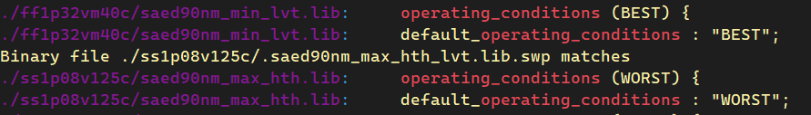
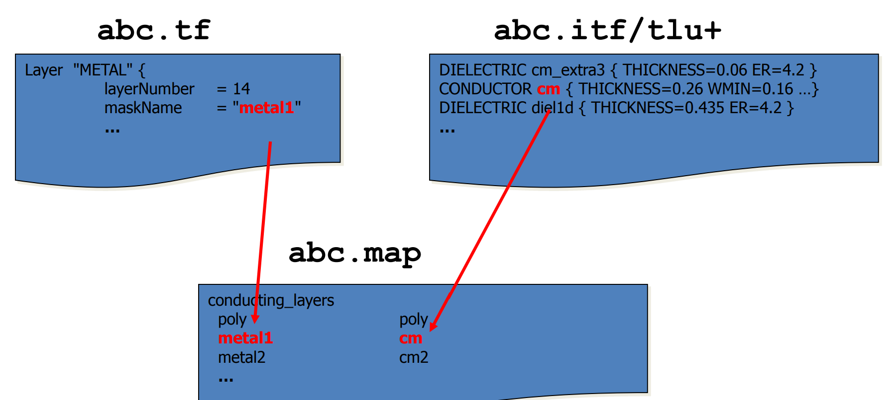

ICC-MCMM
本文最后更新于：2023年11月8日 下午
1. 关于 MCMM
- ICC可以读入多Corner、多Mode组合的scenarios，并行优化。
- 可以由PVT Corner、RC Corner以及工作模式组合成多种scenario的组合。
- PVT Corner：需要覆盖：WC/WCL/BC/ML。
- RC Corner：需要覆盖：Cworst/Cbest/RCworst/RCbest。
- PVT和RC Corner相关内容可以看这篇博客。
- ICC流程 MCMM的设置。
- 表中setup和hold的corner可以去signoff中表格查找。如果使用innovus，可以将所有的Corner都添加进去，让工具去选择合适的Corner进行分析。
- 注意，MCMM的分析是一个不断迭代的过程，最后得到的输出文件需要满足所有Corner。 |流程 |MultiCorner | | ---- | ---- | |FloorPlan |Setup | |Placement |Setup | |pre-CTS |Hold | |post-CTS |Hold | |Route |Hold |
- 在CTS之前，只需要对func mode进行优化即可，scan
mode在CTS及CTS之后进行优化。
- 因为scan_mode的setup是很容易满足的，所以只需要在hold需要覆盖的corner打开即可。
- 数字设计流程中的 timing correlation
- 相邻两个阶段，需要预留的margin差异越小，这两个阶段的correlation越好。
- 例如：如果逻辑综合使用的是DCT工具，那么DCT估算的连线延迟较placement之间的延迟差别不大。
flow timing correlation DC -> FloorPlan/Placement net延迟估计从WLM模型到virtual route（即使使用DCT，精度还是有差别） Placement -> CTS Clock skew的差别以及需要加OCV的估计 CTS -> Route Detail Route以及SI-delta delay Route -> Signoff StarRC提取RC，还需考虑Foundry给的Signoff表格 - 相邻两个阶段，需要预留的margin差异越小，这两个阶段的correlation越好。
2. MCMM 脚本设置
- scenario 声明
- 学习中首先考虑三个scenario，并指定了两种模式（func和scan）的时序约束sdc文件，以及包含PVT
Corner的.db文件和包含RC Corner的TLUPLUS文件。
1
2
3
4
5
6
7
8
9
10
11
12
13
14
15
16
17set SCENARIO_1 "func_wc_cworst"
set ICC_IN_SDC_1_FILE "../input_data/oc8051_func.postCTS.sdc"
set OPCOND_1 "WORST"
set OPCOND_1_LIB "saed90nm_max_hth"
set TLUPLUS_1_FILE "$TLUPLUS_CWORST"
set SCENARIO_2 "func_ml_cbest"
set ICC_IN_SDC_2_FILE "../input_data/oc8051_func.postCTS.sdc"
set OPCOND_2 "BEST"
set OPCOND_2_LIB "saed90nm_min_ht_lvt"
set TLUPLUS_2_FILE "$TLUPLUS_CBEST"
set SCENARIO_3 "scan_ml_cworst"
set ICC_IN_SDC_3_FILE "../input_data/oc8051_scan.postCTS.sdc"
set OPCOND_3 "BEST"
set OPCOND_3_LIB "saed90nm_min_ht_lvt"
set TLUPLUS_3_FILE "$TLUPLUS_CWORST"
- 学习中首先考虑三个scenario，并指定了两种模式（func和scan）的时序约束sdc文件，以及包含PVT
Corner的.db文件和包含RC Corner的TLUPLUS文件。
- 设置OCV timing derate
- OCV相关内容可以看这篇博客。
1
2
3
4
5
6
7
8
9
10
11
12
13
14
15
16
17
18
19
20
21
22
23#timing derate
## for setup
proc set_derate_worst_case {} {
set_timing_derate -clock -early 0.92 -cell_delay
set_timing_derate -clock -early 0.92 -net_delay
set_timing_derate -clock -late 1.00 -cell_delay
set_timing_derate -clock -late 1.00 -net_delay
}
## for hold
proc set_derate_best_case {} {
set_timing_derate -clock -early 1.00 -cell_delay
set_timing_derate -clock -early 1.00 -net_delay
set_timing_derate -clock -late 1.12 -cell_delay
set_timing_derate -clock -late 1.12 -net_delay
}
proc set_derate_typical_case {} {
set_timing_derate -clock -early 0.95 -cell_delay
set_timing_derate -clock -early 0.95 -net_delay
set_timing_derate -clock -late 1.05 -cell_delay
set_timing_derate -clock -late 1.05 -net_delay
}
- OCV相关内容可以看这篇博客。
- 每个scenario分析脚本
set_case_analysis
- 设置工作mode，Func/Scan。每个mode下，时序都需要满足要求。设置mode之后，工具只能看见当前mode下的timing path，所以也只能优化当前mode的path。
set_operating_conditions
时序分析工具一般有3中分析模式，这里的-analysis_type可选bc-wc/ocv分析模型。bc-wc模型较为悲观，一般选择ocv模型。
可以通过-max_library、-max以及-min_library、-min指定 库和operating conditions。其中operating conditions在前面的max/min库中有指定。

set_tlu_plus_files
- 可选 -max_tluplus 和 -min_tluplus，对应max condition和min condition相关的tluplus文件。因为考虑到一个scenario只有一个RC Corner，所以只需要指定一个就可以。
- 如果有tluplus emulation相关的文件，可以添加选项：-max/min_emulation_tluplus.
- tech2itf_map：itf和tf之间的映射关系，itf中包含了RC寄生参数信息，而tf则提供了technology-specific信息，例如：每层金属的名称、物理和电学特性。另外，ICC要求TF必须包含Design Rules。两者需要一个map表格将两个文件中相同的物理信息映射起来。

- 必须要指定的是：maximum tluplus文件和mapping file。如果还指定了minimum tluplus文件，还会进行min condition的RC提取.
set_scenario_options
- 可以指定多个选项进行优化，如setup/hold/leakage_power/dynamic_power。
1
2
3
4
5
6
7
8
9
10
11
12
13
14
15
16
17
18
19
20
21
22
23
24
25
26
27if {$SCENARIO_1 != "" && $ICC_IN_SDC_1_FILE != ""} {
create_scenario $SCENARIO_1
set auto_link_disable true
source $ICC_IN_SDC_1_FILE
set auto_link_disable false
set_operating_conditions \
-analysis_type on_chip_variation -max_library $OPCOND_1_LIB -max $OPCOND_1
set_tlu_plus_files -max_tluplus $TLUPLUS_1_FILE -tech2itf_map $TLUPLUS_MAP
set_clock_uncertainty -setup 0.30 [all_clocks]
set_clock_uncertainty -hold 0.12 [all_clocks]
set_max_transition 0.6 [current_design]
set_max_fanout 64 [current_design]
set_scenario_options -setup true -hold true -leakage_power true -dynamic_power true
set_derate_worst_case
# post cts 需要移除所有时钟的理想特性
remove_input_delay clk
set_propagated_clock [all_clocks]
remove_ideal_network -all
# 修hold violation
set_fix_hold [all_clocks]
}
- 可以指定多个选项进行优化，如setup/hold/leakage_power/dynamic_power。
ICC-MCMM
http://binbinqian.cn/2023/11/08/ICC-MCMM/